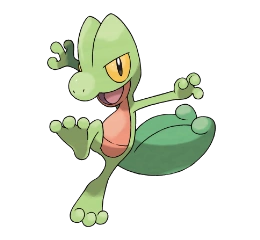

🦎Sabendo mais de Treecko!
Nome: Treecko
Espécie: Pokémon Lagartixa-da-Floresta
Tipo: Planta
Altura média: 0,5 m
Peso médio: 5,0 kg
Idade: Varia conforme o indivíduo
Temperamento: Inteligente, confiante, ágil e independente
Habitat ideal: Florestas, ambientes arborizados e locais com estruturas para escalar
Condição: Saudável, ativo e pronto para criar um vínculo com seu novo treinador
Descrição completa
Conheça o Treecko, um pequeno e fascinante Pokémon do tipo Planta, conhecido por sua agilidade extraordinária, inteligência e personalidade confiante. Com sua pele verde vibrante, olhos grandes e amarelos, ventre avermelhado e uma cauda robusta, Treecko apresenta uma aparência única que combina elegância, atenção e espírito aventureiro. Apesar de seu tamanho relativamente pequeno, esse Pokémon possui reflexos impressionantes e uma habilidade natural para se movimentar entre árvores, galhos e superfícies verticais. Seus membros são equipados com pequenas estruturas aderentes que permitem escalar superfícies com grande facilidade, tornando-o especialmente adaptado à vida em ambientes arborizados. Treecko é conhecido por sua postura tranquila e por sua maneira observadora de agir. Diferentemente de criaturas extremamente agitadas, ele costuma analisar o ambiente antes de tomar uma decisão. Essa característica, combinada com sua inteligência, faz dele um companheiro interessante para treinadores que valorizam disciplina, estratégia e independência. Sua cauda grande e firme desempenha um papel importante no equilíbrio durante os saltos e deslocamentos. Além disso, Treecko apresenta uma notável capacidade de adaptação a ambientes naturais, sendo capaz de se esconder entre a vegetação e observar discretamente tudo o que acontece ao seu redor.

Voltar